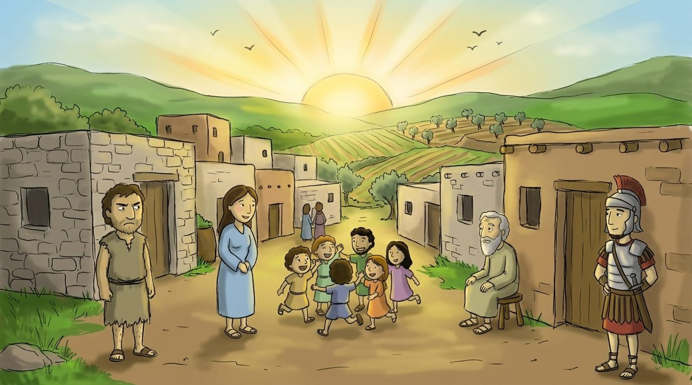
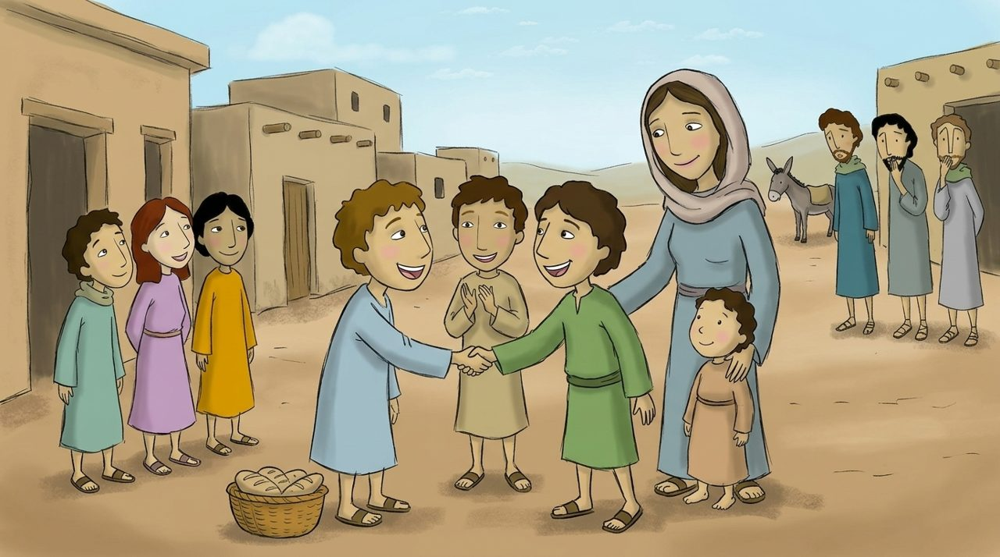
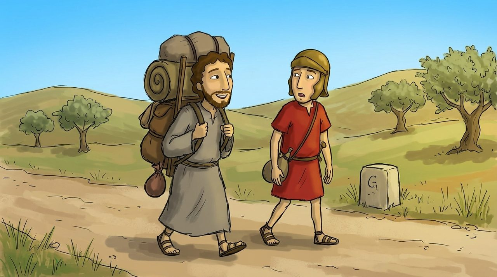

장면 1 · 5:17–20
말씀을 완성하러 오셨어요
예수님이 말씀하셨어요. “나는 하나님의 을 없애러 온 것이 아니라 하러 왔어요.”
하나님의 말씀은 겉으로만 지키는 것이 아니라 마음으로 지키는 거예요.

마태복음 5:17–48
노란 낱말을 누르면 뜻이 나와요. 🔊 버튼을 누르면 읽어 줘요.
예수님이 말씀하셨어요. “나는 하나님의 을 없애러 온 것이 아니라 하러 왔어요.”
하나님의 말씀은 겉으로만 지키는 것이 아니라 마음으로 지키는 거예요.

“사람을 해치지 말라고 했지요? 나는 말해요. 마음속으로 형제에게 화를 내는 것도 잘못이에요.”
“하나님께 예물을 드리러 왔다가 친구가 나 때문에 속상한 것이 생각나면, 먼저 가서 하고 오세요.”

그때 로마 군인은 사람들에게 짐을 오 리 동안 억지로 들게 할 수 있었어요.
예수님은 말씀하셨어요. “누가 억지로 오 리를 가자고 하면 십 리를 함께 가 주세요.” 나쁜 것을 나쁜 것으로 갚지 않고, 오히려 한 것으로 갚는 거예요.
“너희 를 사랑하고, 너희를 괴롭히는 사람을 위해 하세요.”
하나님은 착한 사람에게도 나쁜 사람에게도 똑같이 해를 비춰 주시고 비를 내려 주세요. 우리도 하늘 아버지를 닮은 자녀가 되어요.
“너희 원수를 사랑하며 너희를 박해하는 자를 위하여 기도하라.”
마태복음 5:44 · 어린이가 이해하기 쉬운 말로 옮김
너희 를 하며 너희를 박해하는 자를 위하여 하라.
빠진 낱말을 순서대로 눌러 보세요.
모든 집 위에 똑같이 비치는 해를 그려 보세요.
하나님, 착한 사람과 나쁜 사람 모두에게 해를 비춰 주시는 사랑에 감사합니다. 저도 다툰 친구와 먼저 화해하게 해 주세요. 저를 힘들게 하는 사람을 미워하지 않고 그 사람을 위해 기도하게 해 주세요. 예수님 이름으로 기도합니다. 아멘.